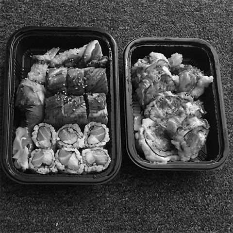
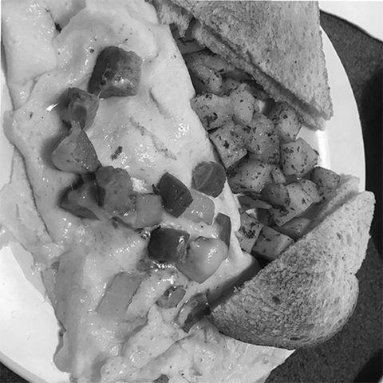

TOOL 1.1
1. Find a window with frames.
2. Use the frames as a grid.
3. Exhaust the grid of letter forms.


TOOL 1.2
1. Find a naturally chaotic space.
2. Conform letters to fit around structures.
3. Contort letters into a new composition.
TOOL 1.3
1. Order or make something edible.
2. Pause and find letter forms.
3. Compose and eat.


